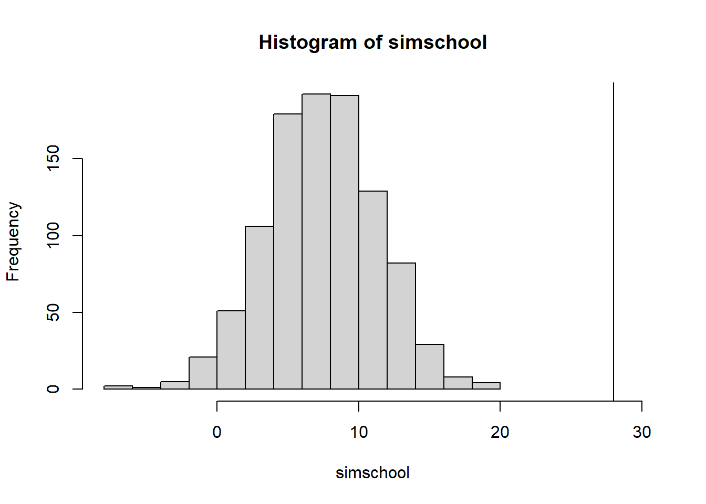
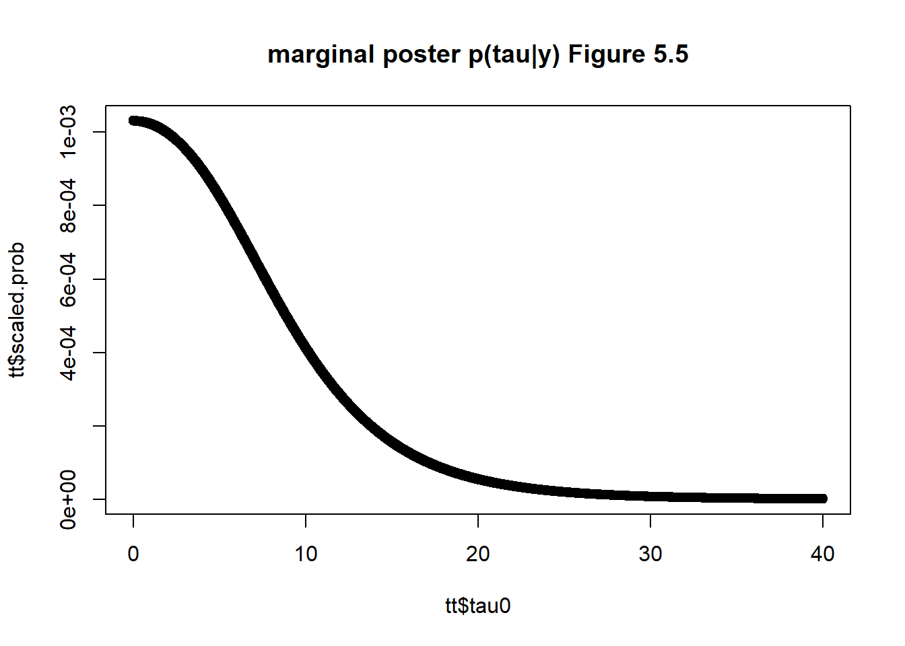
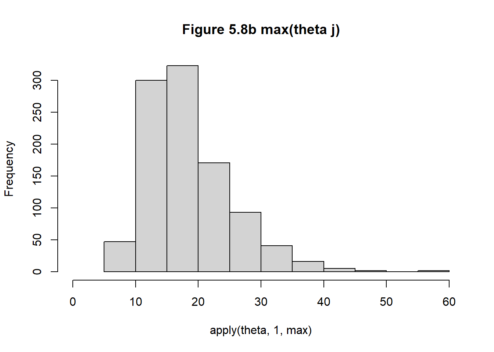
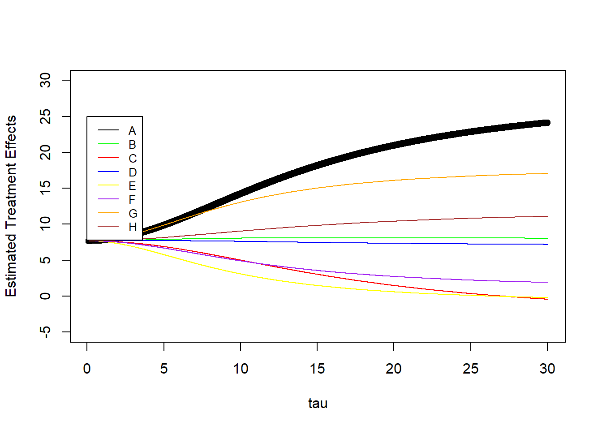
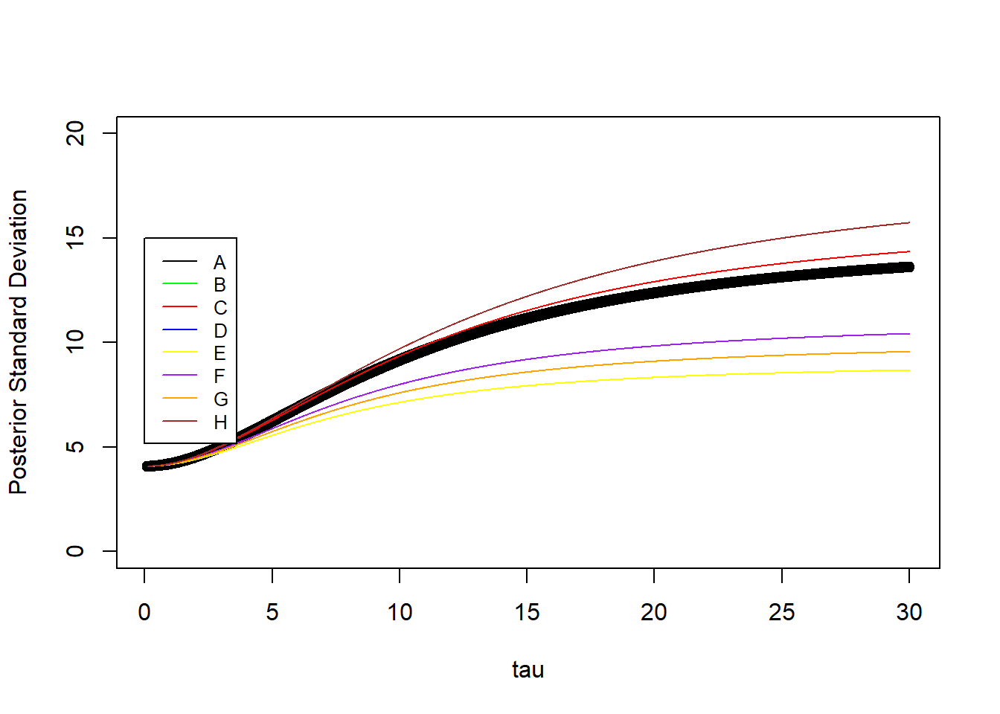

Chapter 5 Hierarchical Models
Many problems involve multiple parameters that are related somehow by the structure of the problem. Each \(\theta_j\) are viewed as a sample from a common population distribution, that is governed by hyperparameters.
Non-hierarchical models have inferior performance for prediction because they overfit the training data that only fit the current data well, this is because the uncertainty of the prior parameters are not included within the model. Hierarchical models avoid this problem because the model is structured around the dependence within the parameters.
5.1 Constructing a parameterized prior distribution
The example from 70 lab rat can use a fixed prior distribution under the binomial likelihood, and a beta prior. One can choose fixed estimates for the prior parameters \(\alpha,\beta\), or can use the moments to estimate the prior parameters. This is not a Bayesian model, and is considered an empirical Bayesian model. Given 70 historical experiments, the sample mean and sample variance are used to solve for the beta mean/variance \(\alpha/\beta\) and \(\alpha/\beta^2\). Note that this is not a fully Bayesian approach.
Logic of combining information
Given 70 historical values, we combine all the parameters \(\theta_j\), for \(j=1,...,71\) with the addition of a newly performed experiment. Combining these into a data set makes sense because there are some dependency of the parameters which is reflected into a full joint prior probability model.
5.2 Exchangeability and hierarchical models
Consider a set of experiments j=1,…,J in which j has the data \(y_j\) and parameter \(\theta_j\) with likelihood \(p(y_j|\theta_j)\). Let \(\theta_j \sim N(\mu_j,\sigma^2)\) come from a superpopulation with common fixed variance.
Exchangeability
If no information, other than the data \(y_j\) is availble to distinguish any of the \(\theta_j\) from any others, and no ordering or grouping of parameters can be made, then by symmetry among the parameters called exchangeability. The joint distribution \(p(\theta_1,...,\theta_J)\) is invariant to permutations of the indices (1,…,J). Generally, the less we know about a problem the more we can rely on the exchangeability assumption.
The form of exchangeabile distribution each parameter \(\theta_j\) as an independent sample from a prior population distribution governed by some unknown \(\phi\) is written as
\[\begin{equation} p(\theta|\phi) = \prod_j p(\theta_j| \phi) \tag{5.1} \end{equation}\]
in general \(\phi\) is unknown so we average over the uncertainty of \(\phi\)
\[\begin{equation} p(\theta) = \int \prod_j p(\theta_j| \phi)* p(\phi)d\phi \end{equation}\]
This form is the mixture of independent identical distributions.
A related result de Finetti’s theorem states that as the limit of \(J\to \infty\) any suitably exchangeable distribution on (\(\theta_1,...,\theta_J)\) can be expressed as a mixture of identical and independent distributions. This theorem connects exchangeability to IID assumptions routinely practiced.
Exchangeability when additional information is available on the units
observations often are not exchangeable, but are partially or conditionally exchangeable - if observations can be grouped, we may make a hierarchical model where each group has its own sub-model, but the group properties are unknown. if we assume that the group properties are exchangeable, we can use a common prior distribution for the group properties. - if \(y_i\) has additional information \(x_i\) so that \(y_i\) are not exchangeable, but (\(y_i,x_i\)) still are exchangeable, then we can make a joint prior for \((y_i,x_i)\) or a condtional model \(y_i | x_i\).
For the rat example, if we knoew specific batches of experiments were made in different laboratories we could assume partial exchangeability and use two level hierarchical model to account for variation within each laboratory and between laboratories.
In general the usual way to model exchangeability with covariates is through conditional independence : $p(_1,…,_J) = (_j p(_j|,x_j))p(| x)d
Objections to exchangeable models
it is natural to object to exchangeability on the grounds that the units actually differ. For the rat example, one can argue that different rats were studied at different times across different laboratories, and therefore not exchangeable. However this information does not invalidate exchangeability, these differences in experimental conditions imply that \(\theta_j\) differ, but can still arise from a common parent distribution. If we had no information to distinguish them, we have a logical choice to assume exchangeability.
The full Bayesian treatment of the hierarchical model
let \(\phi\) be unknown with a prior \(p(\phi)\) then the joint prior is
\[\begin{equation} p(\phi,\theta) = p(\phi)p(\theta| \phi) \end{equation}\]
and the joint posterior is
\[\begin{equation} p(\phi,\theta | y) \propto p(\phi,\theta)p(y| \phi, \theta) = p(\phi,\theta)p(y|\theta) \end{equation}\]
The \(p(y | \phi,\theta)\) depends only on \(\theta\) the hyperparameters \(\phi\) only affects y through \(\theta\). This model includes the uncertainty about \(\phi\) in the model.
The hyperprior distribution
In order to create a joint hyperprior for \((\phi,\theta)\) we must assign a prior distribution to \(\phi\). If little is known about \(\phi\) we can choose a diffuse prior, or noninformative prior, ensuring that the posterior is proper. Further assumptions about the prior must be checked for sensitivity in the hyperprior choice.
The rat example the hyperparameters are \((\alpha,\beta)\) which determine the beta parameter \(\theta\).
Posterior predictive distribution
Hierarchical models are characterized by hyperparameters \(\phi\) and model parameters \(\theta\). There are two posterior predictive distributions that might be an interest - (1) the distribution of future observation \(\tilde{y}\) corresponding to an existing \(\theta_j\). - (2) the distribution of observations \(\tilde{y}\) corresponding to future \(\theta_j\), \(\tilde{\theta}\), drawn from the same superpopulation, common, population
5.3 Bayesian analysis of conjugate hierarchical models
For large number of parameters is it difficult to plot contour plots of the numerous parameters simulated from the joint posterior \((\phi,\theta)\). For the rat example, we obtain simulations of the posterior distribution \(p(\theta,\phi | y)\) for the beta-binomial model for the rat-tumor for which the population distribution \(p(\theta|\phi)\) is conjugate to the likelihood \(p(y | \theta)\). For non-conjugate models , we must use MCMC.
Analytic derivation of conditional and marginal distributions
- write the joint posterior density \(p(\theta, \phi| y)\) in unnormalized form as a product of the hyperprior density \(p(\phi)\), the population distribution \(p(\theta| \phi)\) and the likelihood \(p(y|\theta)\).
- determine analytically the conditional posterior density of \(\theta\) given the hyperparameter \(\phi\), for fixed observed y this is a function of \(\phi, p(\theta | \phi,y)\).
- estimate \(\phi\) using the Bayesian paradigm, that is obtain its marginal posterior distribution \(p(\phi| y)\).
The first step is immediate, and the second step is easy for conjugate models because conditional on \(\phi\) the population distribution for \(\theta\) is just the independent and identical distribution model (5.1). The conditional posterior density is a product of conjugate posterior densities for the components \(\theta_j\).
The marginal posterior \(p(\phi| y )\) can be obtained using an integral \[\begin{equation} p(\phi|y) = \int p(\theta,\phi|y)d\theta \tag{5.2} \end{equation}\]
For many models the marginal computed using albegra and conditional probability formula \[\begin{equation} p(\phi|y) = \frac{ p(\theta,\phi|y)}{ p(\theta|\phi|y)} \tag{5.3} \end{equation}\]
This expression is useful because the numerator is just the joint posterior, and the denominator is the posterior distribution for \(\theta\) if \(\phi\) where known. So the denominator \(p(\theta| \phi, y)\) is regarded as a function of both \(\theta\) for fixed \(\phi, y\).
Drawing simulations from the posterior distribution
The strategy for simulating posterior distribution for \(p(\theta,\phi | y)\) for simple hierarchical models follows
-(1) draw the vector of hyperparameters \(\phi\) from its marginal posterior distribution \(p(\phi | y)\). If \(\phi\) is low-dimensional, the methods in Chapter 3 can be used, and for high dimensional problems, MCMC must be used. -(2) draw the parameter vector \(\theta\) from its conditional posterior distribution \(p(\theta| \phi, y)\) given the drawn value for \(\phi\). for simple examples \(p(\theta | \phi, y) = \prod p(\theta_j | \phi, y)\) the components \(\theta_j\) can be drawn independently, one at a time. -(3) if desired, draw the predictive values \(\tilde{y}\) from the posterior predictive distribution given the drawn \(\theta\). Depending on the problem it might be necessary to first draw \(\tilde{\theta}\) given \(\phi\), and then draw a future value from the distribution.
Exercises
Q1
A box has 1 black and 1 white ball
- a i) pick 1 ball, y1, return it, and draw another y2. This is exchangeable, because other than y1, we have no information about what the draw y2 could be.
- a ii) we have independence by replacement
- a iii) since the draws are identical, then y1 and y2 are both independent draws and the pair of draws can be independent.
-b i) drawing without replacement, y1 is not exchangeable because given y1 color, we know what y2 color is. -b ii) not independent -b iii) as a pair independent (RB) independent of a second pair (BR) with order then the order RB is independent of BR if order matters.
-c i) if there were a million balls, then due to large numbers this is an exchangeable and independent process.
Q2
For unknown model parameters (a) we have total of n black and white balls, then this is an exchangeable and independent process. (b) due to ignorance we have exchangeability, but we do not have independence since this is without replacement. (c) if we know how many colors balls there are then this is not an exchangeable process and not independent process for finite n. For large n, then we can assume independence and exchangeability.
Q3
all 8 parameters are estimated from sampling from the posterior \(p(\tau | y)\), for ease of data wrangling, we obtain the quantiles for each theta separately. but in each posterior estimation, all points are simulataneously estimated.
This reproduces Table 5.3 from the text.
school<-data.frame(school=LETTERS[1:8],
yj =c(28,8,-3,7,-1,1,18,12),
sigmaj = c(15,10,16,11,9,11,10,18))
school$sigma2j<-school$sigmaj^2
## reproducing section 5.5 on pooling
## pooled
ybar_pool<-sum(school$yj/school$sigmaj^2)/sum(1/school$sigmaj^2)
pool_var<-1/sum(1/school$sigmaj^2)
ybar_pool+2*sqrt(pool_var) # 15.82946## [1] 15.82946 ybar_pool-2*sqrt(pool_var) ## -0.5## [1] -0.4582216 ## classical test
sum( (school$yj-mean(school$yj))^2/school$sigmaj^2) ## 4.7 which is less than the X2 d.f (8) so MSB- MSW is negative. pooling is not appropriate.## [1] 4.775407 ## checking to see if 28 is from the pooled population
simschool <-rnorm(1000, mean= ybar_pool, sd=sqrt(pool_var))
hist(simschool,xlim=c(-8,30))
abline(v=max(school$yj ))
### the maximum observation School A = 28 points is not with the population, so pooling does not correct
###
## posterior simulation under a normal model
## yij | thetaj ~ N(thetaj, sigma^2)
## likelihood using sufficient statistics
## ybarj | thetaj ~ N(thetaj, sigmaj^2)
### prior on tau can follow a uniform distribution
## using a grid approach for tau
tau0= seq(0,40,by=0.01)
stepsize=0.01
# 5.20 total precision
vmu.inverse<-function(tau2,sigma2j){
sum(1/(sigma2j+tau2))
}
vmu<-sapply(tau0^2,function(x) vmu.inverse(x,school$sigmaj^2))
# total mean effect
muhat<-function(ybarj, sigma2j,tau2){
numer<- sum(ybarj/(sigma2j+tau2))
denom<- sum( 1/(sigma2j+tau2))
hat<- numer/denom
return(hat)
}
## marginal posterior distribution p(tau| y) 5.21
marginal.posterior.tau<-function(tau,sigma2j,ybarj){
tau2<-tau^2
prob.tau<-dunif(tau,min=0,max=40) ## assuming unif prior
vmu.inv<-vmu.inverse(tau2,sigma2j)
vmu<-sqrt(1/vmu.inv)
total.precision<-1/(sigma2j+tau2)
group.precision.term<- sqrt(total.precision)
group.mu<-muhat(ybarj,sigma2j,tau2)
exp.term<- exp(-1*(ybarj -group.mu )^2/(2*(sigma2j+tau2)))
group.prod<-prod( group.precision.term*exp.term)
final<- prob.tau*vmu*group.prod
return(final)
}
tt<-data.frame(tau0,pt=sapply(tau0,function(x) marginal.posterior.tau(x,school$sigma2j,school$yj)))
tt$scaled.prob<-tt$pt/sum(tt$pt)
plot(tt$tau0,tt$scaled.prob, main='marginal poster p(tau|y) Figure 5.5')
## prior on tau can follow a scaled inverse-X2(n-1,s^2) distribution
## alternatively we can use scaled inverse
## now that we have the distribution of tau, sample from it
## marginal posterior 5.19
muhat_given_tau.y<-sapply(tau0,function(x) muhat(school$yj,school$sigma2j,x^2))
vmu_given_tau.y<-1/(sapply(tau0^2,function(x) vmu.inverse(x,school$sigmaj^2)))
### FIX ME: sample mu
# equation 5.20
marginal.post.mu_given_tau.y<-function(yj,sigma2j,tau2){
muhat<-muhat(yj,sigma2j,tau2)
## precision term
vmu<-vmu.inverse(tau2,sigma2j)
mu<- rnorm(100,mean=muhat,sd=sqrt(1/vmu)) ## how many points per posterior tau
## we take the posterior mean given 1 value of tau
prob.mu<-dnorm(mean(mu),mean=muhat,sd=sqrt(1/vmu))
return( data.frame(mu=mean(mu),prob.mu=prob.mu))
}
## given mu, sample theta j
## conditional posterior for each theta j
## eq 5.17
conditional.posterior.thetaj<-function(yj,sigma2j,tau2,mu){
thetajhat<-(yj/sigma2j + mu/tau2)/(1/sigma2j+1/tau2)
vj<-1/((1/sigma2j)+(1/tau2))
nj<-length(thetajhat)
thetaj<- sapply(seq(1,nj),function(x) rnorm(1, thetajhat[x], sd=sqrt(vj)[x]))
prob.thetaj<-numeric(nj)
prob.thetaj<- sapply(seq(1,nj),function(x) dnorm(thetaj[x], mean=thetajhat[x], sd=sqrt(vj)[x]))
return( data.frame(thetaj=(thetaj),prob.thetaj=prob.thetaj))
}
posterior<-function(tau,sigma2j,yj){
tau2<-tau^2
post.tau<-marginal.posterior.tau(tau,sigma2j,yj)
post.mu<-marginal.post.mu_given_tau.y(yj,sigma2j,tau2)
post.theta<-conditional.posterior.thetaj(yj,sigma2j,tau2,post.mu$mu)
full.post<-data.frame(theta=post.theta$thetaj,pdf=post.tau*post.mu$prob.mu*post.theta$prob.thetaj)
return(full.post)
}
## simulate the effects of thetaj
## closely reproduces table 5.3 in section 5
theta1<- sapply(sample(tt$tau0,1000,prob=tt$scaled.prob),
function(x) posterior(x,school$sigma2j,school$yj)[1,1])
theta1[is.nan(theta1)]<-mean(theta1[!is.nan(theta1)])
t1q<-quantile(theta1,c(0.025,0.25,0.5,0.75,0.975),na.rm=TRUE)
theta2<- sapply(sample(tt$tau0,1000,prob=tt$scaled.prob),
function(x) posterior(x,school$sigma2j,school$yj)[2,1])
theta2[is.nan(theta2)]<-mean(theta2[!is.nan(theta2)])
t2q<-quantile(theta2,c(0.025,0.25,0.5,0.75,0.975),na.rm=TRUE)
theta3<- sapply(sample(tt$tau0,1000,prob=tt$scaled.prob),
function(x) posterior(x,school$sigma2j,school$yj)[3,1])
theta3[is.nan(theta3)]<-mean(theta3[!is.nan(theta3)])
t3q<-quantile(theta3,c(0.025,0.25,0.5,0.75,0.975),na.rm=TRUE)
theta4<- sapply(sample(tt$tau0,1000,prob=tt$scaled.prob),
function(x) posterior(x,school$sigma2j,school$yj)[4,1])
theta4[is.nan(theta4)]<-mean(theta4[!is.nan(theta4)])
t4q<- quantile(theta4,c(0.025,0.25,0.5,0.75,0.975),na.rm=TRUE)
theta5<- sapply(sample(tt$tau0,1000,prob=tt$scaled.prob),
function(x) posterior(x,school$sigma2j,school$yj)[5,1])
theta5[is.nan(theta5)]<-mean(theta5[!is.nan(theta5)])
t5q<- quantile(theta5,c(0.025,0.25,0.5,0.75,0.975),na.rm=TRUE)
theta6<- sapply(sample(tt$tau0,1000,prob=tt$scaled.prob),
function(x) posterior(x,school$sigma2j,school$yj)[6,1])
theta6[is.nan(theta6)]<-mean(theta6[!is.nan(theta6)])
t6q<-quantile(theta6,c(0.025,0.25,0.5,0.75,0.975),na.rm=TRUE)
theta7<- sapply(sample(tt$tau0,1000,prob=tt$scaled.prob),
function(x) posterior(x,school$sigma2j,school$yj)[7,1])
theta7[is.nan(theta7)]<-mean(theta7[!is.nan(theta7)])
t7q<-quantile(theta7,c(0.025,0.25,0.5,0.75,0.975),na.rm=TRUE)
theta8<- sapply(sample(tt$tau0,1000,prob=tt$scaled.prob),
function(x) posterior(x,school$sigma2j,school$yj)[8,1])
theta8[is.nan(theta8)]<-mean(theta8[!is.nan(theta8)])
t8q<-quantile(theta8,c(0.025,0.25,0.5,0.75,0.975),na.rm=TRUE)
allq<-rbind(t1q,t2q,t3q,t4q,t5q,t6q,t7q,t8q)
print(allq)## 2.5% 25% 50% 75% 97.5%
## t1q 0.4457383 7.326460 10.017273 16.091238 33.37148
## t2q -3.9503168 4.831116 7.726473 10.619370 20.25554
## t3q -14.8226207 2.859082 6.858540 9.538431 18.57518
## t4q -7.3115433 5.009563 7.783060 10.934833 21.04213
## t5q -9.4629862 1.658382 6.024443 8.293584 14.69150
## t6q -10.7831533 2.029477 6.586762 8.797824 17.50866
## t7q 0.9487190 7.244206 9.623687 14.367122 25.85331
## t8q -7.3113309 4.974897 7.888110 11.282060 27.24911i could not figure out how to take the margin across \(\mu\) for 5.6 and 5.7.
we found that our posterior effects had 4\(\%\) greater than the maximum observed value 28.4 whereas the text found 22/200 which is slightly larger from 200 simulations, we used 1,000.
abest<-table(theta1>(theta2) & theta1>theta3 & theta1>theta4 & theta1>theta5 & theta1>theta6 & theta1>theta7 &theta1>theta8)
bbest<-table(theta2>(theta1) & theta2>theta3 & theta2>theta4 & theta2>theta5 & theta2>theta6 & theta2>theta7 &theta2>theta8)
cbest<-table(theta3>(theta1) & theta3>theta2 & theta3>theta4 & theta3>theta5 & theta3>theta6 & theta3>theta7 &theta3>theta8)
dbest<-table(theta4>(theta1) & theta4>theta2 & theta4>theta3 & theta4>theta5 & theta4>theta6 & theta4>theta7 &theta4>theta8)
ebest<-table(theta5>(theta1) & theta5>theta2 & theta5>theta3 & theta5>theta4 & theta5>theta6 & theta5>theta7 &theta5>theta8)
fbest<-table(theta6>(theta1) & theta6>theta2 & theta6>theta3 & theta6>theta4 & theta6>theta5 & theta6>theta7 &theta6>theta8)
gbest<-table(theta7>(theta1) & theta7>theta2 & theta7>theta3 & theta7>theta4 & theta7>theta6 & theta7>theta6 &theta7>theta8)
hbest<-table(theta8>(theta1) & theta8>theta2 & theta8>theta3 & theta8>theta4 & theta8>theta5 & theta8>theta6 &theta8>theta7)
a<-abest['TRUE']/sum(abest)
b<-bbest['TRUE']/sum(bbest)
c<-cbest['TRUE']/sum(cbest)
d<-dbest['TRUE']/sum(dbest)
e<-ebest['TRUE']/sum(ebest)
f<-fbest['TRUE']/sum(fbest)
g<-gbest['TRUE']/sum(gbest)
h<-hbest['TRUE']/sum(hbest)5.3.0.1 Q3 part a
- 5.3a this is correct and is very close to section 5 results.
better<-matrix(0,nrow=8,ncol=8)
fillIn<-function(better,theta1,theta2,i=1,j=2){
pij<-table(theta1>theta2)/sum(table(theta1>theta2))
better[i,j]<-pij['TRUE']
return(better)
}
better<-fillIn(better,theta1,theta2,i=1,j=2)
better<-fillIn(better,theta1,theta3,i=1,j=3)
better<-fillIn(better,theta1,theta4,i=1,j=4)
better<-fillIn(better,theta1,theta5,i=1,j=5)
better<-fillIn(better,theta1,theta6,i=1,j=6)
better<-fillIn(better,theta1,theta7,i=1,j=7)
better<-fillIn(better,theta1,theta8,i=1,j=8)
better<-fillIn(better,theta2,theta1,i=2,j=1)
better<-fillIn(better,theta2,theta3,i=2,j=3)
better<-fillIn(better,theta2,theta4,i=2,j=4)
better<-fillIn(better,theta2,theta5,i=2,j=5)
better<-fillIn(better,theta2,theta6,i=2,j=6)
better<-fillIn(better,theta2,theta7,i=2,j=7)
better<-fillIn(better,theta2,theta8,i=2,j=8)
better<-fillIn(better,theta3,theta1,i=3,j=1)
better<-fillIn(better,theta3,theta2,i=3,j=2)
better<-fillIn(better,theta3,theta4,i=3,j=4)
better<-fillIn(better,theta3,theta5,i=3,j=5)
better<-fillIn(better,theta3,theta6,i=3,j=6)
better<-fillIn(better,theta3,theta7,i=3,j=7)
better<-fillIn(better,theta3,theta8,i=3,j=8)
better<-fillIn(better,theta4,theta1,i=4,j=1)
better<-fillIn(better,theta4,theta2,i=4,j=2)
better<-fillIn(better,theta4,theta3,i=4,j=3)
better<-fillIn(better,theta4,theta5,i=4,j=5)
better<-fillIn(better,theta4,theta6,i=4,j=6)
better<-fillIn(better,theta4,theta7,i=4,j=7)
better<-fillIn(better,theta4,theta8,i=4,j=8)
better<-fillIn(better,theta5,theta1,i=5,j=1)
better<-fillIn(better,theta5,theta2,i=5,j=2)
better<-fillIn(better,theta5,theta3,i=5,j=3)
better<-fillIn(better,theta5,theta4,i=5,j=4)
better<-fillIn(better,theta5,theta6,i=5,j=6)
better<-fillIn(better,theta5,theta7,i=5,j=7)
better<-fillIn(better,theta5,theta8,i=5,j=8)
better<-fillIn(better,theta6,theta1,i=6,j=1)
better<-fillIn(better,theta6,theta2,i=6,j=2)
better<-fillIn(better,theta6,theta3,i=6,j=3)
better<-fillIn(better,theta6,theta4,i=6,j=4)
better<-fillIn(better,theta6,theta5,i=6,j=5)
better<-fillIn(better,theta6,theta7,i=6,j=7)
better<-fillIn(better,theta6,theta8,i=6,j=8)
better<-fillIn(better,theta7,theta1,i=7,j=1)
better<-fillIn(better,theta7,theta2,i=7,j=2)
better<-fillIn(better,theta7,theta3,i=7,j=3)
better<-fillIn(better,theta7,theta4,i=7,j=4)
better<-fillIn(better,theta7,theta5,i=7,j=5)
better<-fillIn(better,theta7,theta6,i=7,j=6)
better<-fillIn(better,theta7,theta8,i=7,j=8)
better<-fillIn(better,theta8,theta1,i=8,j=1)
better<-fillIn(better,theta8,theta2,i=8,j=2)
better<-fillIn(better,theta8,theta3,i=8,j=3)
better<-fillIn(better,theta8,theta4,i=8,j=4)
better<-fillIn(better,theta8,theta5,i=8,j=5)
better<-fillIn(better,theta8,theta6,i=8,j=6)
better<-fillIn(better,theta8,theta7,i=8,j=7)
better<-cbind(c(a,b,c,d,e,f,g,h),better)
rownames(better)<-LETTERS[1:8]
colnames(better)<-c("best",LETTERS[1:8])
print(better)## best A B C D E F G H
## A 0.290 0.000 0.671 0.714 0.662 0.783 0.752 0.533 0.633
## B 0.102 0.329 0.000 0.570 0.503 0.634 0.620 0.343 0.487
## C 0.074 0.286 0.430 0.000 0.425 0.556 0.526 0.306 0.417
## D 0.100 0.338 0.497 0.575 0.000 0.636 0.601 0.358 0.482
## E 0.040 0.217 0.366 0.444 0.364 0.000 0.467 0.220 0.346
## F 0.047 0.248 0.380 0.474 0.399 0.533 0.000 0.249 0.377
## G 0.229 0.467 0.657 0.694 0.642 0.780 0.751 0.000 0.609
## H 0.124 0.367 0.513 0.583 0.518 0.654 0.623 0.391 0.000Inference on the \(P(max(\theta_j)>28.4)\) in our data is 93/1000 which is 0.093. from the text 22/200 which is roughly 0.11
theta<-data.frame(theta1,theta2,theta3,theta4,theta5,theta6,theta7,theta8)
hist(apply(theta,1,max),xlim=c(0,60),main='Figure 5.8b max(theta j)')
table(apply(theta,1,max)>28.4)['TRUE']/sum(table(apply(theta,1,max)>28.4))## TRUE
## 0.0885.3.0.2 Q 5.3 part b
- 5.3.b taking \(\tau \to \infty\) we have \(\theta_j \sim N(y_j, \sigma^2_j)\)
For $P(_i > _j) = \(P(\theta_i - \theta_j>0\))
x1<-rnorm(1000,mean=school$yj[1],sd=school$sigmaj[1])
x2<-rnorm(1000,mean=school$yj[2],sd=school$sigmaj[2])
x3<-rnorm(1000,mean=school$yj[3],sd=school$sigmaj[3])
x4<-rnorm(1000,mean=school$yj[4],sd=school$sigmaj[4])
x5<-rnorm(1000,mean=school$yj[5],sd=school$sigmaj[5])
x6<-rnorm(1000,mean=school$yj[6],sd=school$sigmaj[6])
x7<-rnorm(1000,mean=school$yj[7],sd=school$sigmaj[7])
x8<-rnorm(1000,mean=school$yj[8],sd=school$sigmaj[8])
allQ<-rbind( quantile(x1,c(0.025,0.25,0.5,0.75,0.975)),
quantile(x2,c(0.025,0.25,0.5,0.75,0.975)),
quantile(x3,c(0.025,0.25,0.5,0.75,0.975)),
quantile(x4,c(0.025,0.25,0.5,0.75,0.975)),
quantile(x5,c(0.025,0.25,0.5,0.75,0.975)),
quantile(x6,c(0.025,0.25,0.5,0.75,0.975)),
quantile(x7,c(0.025,0.25,0.5,0.75,0.975)),
quantile(x8,c(0.025,0.25,0.5,0.75,0.975))
)
rownames(allQ)<-LETTERS[1:8]
## pair wise
better2<-matrix(0,nrow=8,ncol=8)
for(i in 1:8){
for(j in 1:8){
better2[i,j]<- pnorm( (school$yj[i]- school$yj[j])/sqrt( school$sigma2j[i]+school$sigma2j[j]) )
}
}
allind<-cbind(x1,x2,x3,x4,x5,x6,x7,x8)
x1b<-table(x1>=apply(allind,1,max))['TRUE']/1000
x2b<-table(x2>=apply(allind,1,max))['TRUE']/1000
x3b<-table(x3>=apply(allind,1,max))['TRUE']/1000
x4b<-table(x4>=apply(allind,1,max))['TRUE']/1000
x5b<-table(x5>=apply(allind,1,max))['TRUE']/1000
x6b<-table(x6>=apply(allind,1,max))['TRUE']/1000
x7b<-table(x7>=apply(allind,1,max))['TRUE']/1000
x8b<-table(x8>=apply(allind,1,max))['TRUE']/1000
sep.prob<- cbind(c(x1b,x2b,x3b,x4b,x5b,x6b,x7b,x8b),better2)
rownames(sep.prob)<-LETTERS[1:8]
colnames(sep.prob)<-c("best",LETTERS[1:8])
print(sep.prob)## best A B C D E F G
## A 0.554 0.50000000 0.8663713 0.9212424 0.8705441 0.9513231 0.9266837 0.71045013
## B 0.034 0.13362875 0.5000000 0.7200530 0.5268155 0.7482410 0.6811336 0.23975006
## C 0.023 0.07875756 0.2799470 0.5000000 0.3032674 0.4566223 0.4183914 0.13285469
## D 0.029 0.12945588 0.4731845 0.6967326 0.5000000 0.7132410 0.6501386 0.22966818
## E 0.004 0.04867694 0.2517590 0.5433777 0.2867590 0.5000000 0.4440458 0.07893687
## F 0.017 0.07331631 0.3188664 0.5816086 0.3498614 0.5559542 0.5000000 0.12640645
## G 0.174 0.28954987 0.7602499 0.8671453 0.7703318 0.9210631 0.8735935 0.50000000
## H 0.165 0.24734659 0.5770127 0.7333055 0.5936804 0.7408523 0.6989733 0.38537815
## H
## A 0.7526534
## B 0.4229873
## C 0.2666945
## D 0.4063196
## E 0.2591477
## F 0.3010267
## G 0.6146218
## H 0.50000005.3.0.3 Q 5.3.c
- 5.3.c Discussing the differences the intervals are much wider in the separate models for \(\theta_j\) compared to the Bayesian model. This is because the Bayesian model borrows strenghts of associaton across other school information.
Under separate model, the probability that A is best is approxmiately 0.521, whereas in Bayesian model it is 0.283. These inferences are more conservative in the Bayesian model because it incorporates uncertainty in the model. The Bayesian model assumes a uniform prior for \(\tau\) which is the deviation/variability of the school coaching effectiveness, whereas in the separate model operates under the assumption that there is large variability of coaching effectiveness \(\tau = \infty\).
print(allQ)## 2.5% 25% 50% 75% 97.5%
## A -1.6671674 16.8008160 28.4378866 38.292573 56.64421
## B -11.7881530 1.4666970 7.8338828 15.011281 25.71342
## C -32.9503177 -13.1854338 -2.8801841 8.302523 27.71221
## D -13.2036155 0.6344413 7.8860750 14.677863 28.52870
## E -18.8775183 -6.4175582 -0.3387703 5.609494 16.85795
## F -20.2917461 -6.9974197 0.9482539 8.851298 22.31686
## G -0.9984314 11.3323360 17.5468144 24.429637 35.98980
## H -21.8486938 -0.4152265 12.2354066 23.914510 45.65002print(allq)## 2.5% 25% 50% 75% 97.5%
## t1q 0.4457383 7.326460 10.017273 16.091238 33.37148
## t2q -3.9503168 4.831116 7.726473 10.619370 20.25554
## t3q -14.8226207 2.859082 6.858540 9.538431 18.57518
## t4q -7.3115433 5.009563 7.783060 10.934833 21.04213
## t5q -9.4629862 1.658382 6.024443 8.293584 14.69150
## t6q -10.7831533 2.029477 6.586762 8.797824 17.50866
## t7q 0.9487190 7.244206 9.623687 14.367122 25.85331
## t8q -7.3113309 4.974897 7.888110 11.282060 27.249115.3.0.4 Q 5.3 part d
- 5.3 d setting \(\tau =0\) creates \(\theta_j | \mu, \tau, y \sim N(\infty, 0)\) because of the equation for \(\hat{\theta_j} = \infty/\infty\) and \(V_j = 1/\infty =0\). the inferences for posterior for \(\mu | \tau, y\) and \(\tau | y\) are not degenerate. but for the parameters for \(\theta\) these are degenerate. Setting \(\tau =0\) means that the variance parameter goes to 0, which reduces all points to a point mass, and sets them equal (0 variability).
Q4
- by definition of exchangability, other than the data there can be no information that can distinguish \(\theta_j\), and by having a distinct grouping of parameters in either N(1,1) or N(-1,1) this violates exchangability. However, the problem states that we have not observed which parameters come from any distribution. This is similar to the divorce problem, such that over the 8 mid-western states, we know that Utah and Nevada will have lower/higher divorce rates, however after observing 7 values, we do not have information about the 8th state that was not yet observed; this is an exchangeable process. However if we had information that the last state was Nevada or Utah, then this is not exchangeable. Since we have information that there will be a grouping, but currently did not observe the parameters, this is exchangeable.
Using equation 5.2 the prior is \(p(\theta) = \int \prod p(\theta_j | \phi) p(\phi)d\phi\) \[\begin{equation} p(\theta_1,...\theta_{2J}) \int \prod N(\theta_j | \mu, \sigma^2)p(\mu, \sigma^2)= \sum_p \prod_{i=1}^J N(\theta_j(p)| 1,1)\prod_{k=J+1}^{2J}N(\theta_{k(p)}| -1,1)\frac{1}{{2J\choose J}} \end{equation}\]
Equation 5.14 we take the sum over the posterior under the prior. the probability \(p(\mu,\sigma^2)\) we have 2J total groups and choose J.
-(b) given two distributions N(1,1) and N(-1,1) the estimates will have a negative covariance so we do not have an identically distributed mixture, we can assume independence, but for large values observed, these are likely to be originated from N(1,1), and for smaller , negative, values these are likely originated from N(-1,1). Thus these are not identically distributed.
-(c) for \(J\to \infty\) the covariance between these two groups reduces to 0 as the number of groups approaches infinity. De-finitti’s theorem for infinite groups indicates that the distinction between exactly 2 groups disappears, and also assigning exactly half of the parameters to the correct half also disappears. So for infinite groupings, the distinction between groups is not possible and there is exchangability in the limit. However for finite groups we can not apply De-finitti’s theorem.
Q7
-(a) we use Adam’s law to find the mean/variance of the prior y, s.t. \(y|\theta \sim Poi(\theta)\), and a gamma prior \[ \begin{aligned} E[y] &= E[E(y|\theta)] = E[\theta] \\ &= \alpha/\beta \\ V[y] &= E[V(y|\theta)] + V[E(y|\theta)] = E[\theta] + V[\theta] = \alpha/\beta + \alpha/\beta^2 = \frac{\alpha(\beta+1)}{\beta^2} \end{aligned} \] -(b) in the normal model we have marginally t= \(\frac{\sqrt{n}(\mu-\bar{y})}{s}\) that is \(t_{n-1}\). Deriving the first 2 moments, where \(\mu \sim N(\bar{y},\sigma^2/n)\). where \(\sigma^2 | y \sim\) Scaled-Inv-Chi2(n-1,\(s^2\)).
Note we have to condition on y because the formula for \(t_{n-1}\) includes \(\bar{y}\) \[ \begin{aligned} E[t_{n-1} | y] &= E[E(\frac{\sqrt{n}(\mu-\bar{y})}{s}) |y] = 0 \\ V[t_{n-1} | y] &= E[V(t|\sigma^2,y) |y] +V[ E(t|y)] \\ &= E[\frac{n}{s^2}V((\mu-\bar{y})|\sigma^2,y)|y] +0 \\ &= E[\frac{n\sigma^2}{n*s^2}] = \frac{s^2(n-1)}{s^2(n-3)}=(n-1)/(n-3) ; n >3 \end{aligned} \]
Q10
-(a) if the hyperprior \(p(\mu,\tau)\propto \tau^{-1}\) show that the posterior is improper the posterior is written as \(p(\theta,\mu,\tau | y) = p(\theta,\mu | \tau, y)p(\tau|y)\). This is proper if both terms are proper, and it is improper if at least 1 term is improper. we show that \(p(\tau | y)\) is improper for \(p(\tau)\propto \tau^{-1}\). Using equation 5.21 \[ \begin{aligned} p(\tau|y) \propto \int p(\tau)V_{\mu}^{-1/2}\prod_{j=1}^J(\sigma_j^2+\tau^2)^{-1/2}exp(\frac{-(\bar{y_{.j}}-\hat{\mu})^2)}{2(\sigma_j^2+\tau^2)})d\tau \\ \int_{0}^{\infty} \frac{1}{\tau}V_{\mu}^{-1/2}\prod_{j=1}^J(\sigma_j^2+\tau^2)^{-1/2}exp(\frac{-(\bar{y_{.j}-\hat{\mu})^2})}{2(\sigma_j^2+\tau^2)})d\tau \\ \end{aligned} \] so this is undefined for \(\tau=0\) and hence the term \(p(\tau|y\)) is undefined and causes the posterior to be undefined.
-(b) for \(p(\mu,\tau)\propto 1\) equation 5.16 has 2 proper distributions that are in the normal family distribution and are well-defined. \(N(\theta_j | \mu,\tau^2)\) and \(N(\bar{y_{.j}} | \theta_j, \sigma_j^2)\) so these are proper distributions.
Another way to see this is to take the limits of equation 5.21 where \(p(\tau)\propto 1\) As the limit goes to 0 the term is well defined. \[ \begin{aligned} & \lim_{\tau \to 0} p(\tau)V_{\mu}^{-1/2}\prod_{j=1}^J(\sigma_j^2+\tau^2)^{-1/2}exp(\frac{-(\bar{y_{.j}}-\hat{\mu})^2)}{2(\sigma_j^2+\tau^2)}) = \\ & \frac{1}{\sum \frac{1}{\sigma_j^2}}^{1/2}\prod (\sigma_j^2)^{-1/2}exp(\frac{-(\bar{y_{.j}}-\hat{\mu})^2)}{2\sigma_j^2}) \\ \end{aligned} \] As the limit \(\tau \to \infty\) we the exponential term goes to 0 because \(\tau\) is in the denominator, so the entire term will go to 0. So the posterior is proper because the limits are defined.
-(c) if i had data from J=2 schools only, i would test for between variance and within variance to see is MS justify pooling the estimates for both schools, or require separate models for each. if within each school there were enough students to justify modeling school-specific parameters, I would use equation 5.16 and model the posterior distribution.
Another option is to model each school independently as separate models with known variance and i would use non-informative priors.
Q11
For non conjugate models suppose that in the rat tumor example we had \(logit(\theta_j)\sim N(\mu,\tau^2)\) for j=1,…,J and assume a non-informative prior for the hyperparameters. -(a) the joint posterior can be written as \[\begin{equation} p(\theta,\mu,\tau|y ) = p(\theta,\mu,\tau)p(y|\theta,\mu,\tau) = p(\theta|\mu,\tau)p(\mu,\tau)p(y|\theta,\mu,\tau) \end{equation}\]
Note that \(p(\theta,\mu,\tau)\) is in terms of \(\theta\) and not on the logit scale, so we need the jacobian for change of variables.
\[ \begin{aligned} p(\theta|\mu,\tau)p(\mu,\tau)p(y|\theta,\mu,\tau) = p(\mu,\tau)\prod_j \frac{1}{\sqrt{2\pi}\tau}exp(\frac{-1}{2\tau^2}(logit(\theta_j -\mu)^2))\prod_j(\theta_j)^{y_{i}}(1-\theta_j)^{n_i-y_i} |dlogit(\theta)/d\theta| \\ p(\theta|\mu,\tau)p(\mu,\tau)p(y|\theta,\mu,\tau) = p(\mu,\tau)\prod_j \frac{1}{\sqrt{2\pi}\tau}exp(\frac{-1}{2\tau^2}(logit(\theta_j -\mu)^2))\prod_j(\theta_j)^{y_{i}}(1-\theta_j)^{n_i-y_i}|\frac{1}{\theta(1-\theta)}| \end{aligned} \] -(b) we can not integrate this equation fully because it is not in a known family. Although we have separate factors in the equation, we can not analytically derive the integral in closed form. -(c) Using equation 5.5 \(p(\mu,\tau |y) = \frac{p(\theta,\mu,\tau | y)}{p(\theta| \mu,\tau, y)}\) we can not integrate the denominator \(p(\theta|mu,\tau,y)\) in closed form as a function of \(\mu,\tau\) which doesn’t have a closed form solution.
Q12
To find the conditional expection we use equation 5.20 and 5.17 from the text
\[ \begin{aligned} E[\theta_j | \tau, y ] &= E[ E(\theta_j| \mu, \tau, y) | \tau,y] \\ & = E[ \hat{\theta_j} | \tau, y] =\frac{ 1/\sigma_j^2 \bar{y_{.j}}+1/\tau^2 E[\mu]}{1/\sigma_j^2+1/\tau^2} \\ & = \frac{ 1/\sigma_j^2 \bar{y_{.j}}+1/\tau^2 \hat{\mu}}{1/\sigma_j^2+1/\tau^2} \\ \text{where } \hat{\mu} = \frac{\sum_j \frac{1}{\sigma_j^2+\tau^2}\bar{y_{.j}}}{\sum_j \frac{1}{\sigma_j^2+\tau^2}} \end{aligned} \]
school<-data.frame(school=LETTERS[1:8],
yj =c(28,8,-3,7,-1,1,18,12),
sigmaj = c(15,10,16,11,9,11,10,18))
school$sigma2j<-school$sigmaj^2
## conditional expectation
mu_hat<-function(allsigma2j,tau2,allybarj){
numer<-sum( (1/(allsigma2j+tau2))*allybarj)
denom<-sum(1/(allsigma2j+tau2))
muhat= numer/denom
return(muhat)
}
conditionalExpectation<-function(sigma2j,ybarj,tau2,allsigma2j,allybarj){
muhat<-mu_hat(allsigma2j, tau2,allybarj)
a<-((1/sigma2j)*ybarj)/(1/sigma2j + 1/tau2)
b<- ((1/tau2)*muhat)/(1/sigma2j + 1/tau2)
cond.mean<-a+b
return(cond.mean)
}
tau_seq = seq(0.1,30,by=0.01)
allmeans<-matrix(0, nrow=length(tau_seq),ncol=nrow(school))
for(i in 1:nrow(school)){
aa<-sapply(tau_seq,function(x) conditionalExpectation(school$sigma2j[i],school$yj[i],tau2=x^2,school$sigma2j,school$yj))
allmeans[,i]<-aa
}
plot(tau_seq,allmeans[,1],ylim=c(-5,30),ylab='Estimated Treatment Effects', xlab='tau')
lines(tau_seq,allmeans[,2],col='green')
lines(tau_seq,allmeans[,3],col='red')
lines(tau_seq,allmeans[,4],col='blue')
lines(tau_seq,allmeans[,5],col='yellow')
lines(tau_seq,allmeans[,6],col='purple')
lines(tau_seq,allmeans[,7],col='orange')
lines(tau_seq,allmeans[,8],col='brown')
legend(0, 25,
legend=c("A", "B","C","D","E","F","G","H"),
col=c("black", "green","red","blue","yellow","purple","orange","brown"), lty=1, cex=0.8) For the \(V(\theta_j | \tau,y) = E[V(\theta_j | \mu,\tau,y)|\tau,y] + V[E(\theta_j | \mu,\tau,y)|\tau,y)]\) Using the equations for \(V_j , V_\mu\) from section 5 we derived the conditional variance.
\[ \begin{aligned} E[V(\theta_j | \mu,\tau,y)|\tau,y] + V[E(\theta_j | \mu,\tau,y)|\tau,y)] &= E[V_j | \tau, y] +V[\hat{\theta_j}| \tau, y] \\ &= V_j +Vj^2(1/\tau^2)^2V_\mu \end{aligned} \]
V_mu<-function(allsigma2j,tau2){
vinv<-sum( 1/(allsigma2j+tau2))
vmu=1/vinv
return(vmu)
}
conditionalVariance<-function(sigma2j, tau2,allsigma2j){
vmu<-V_mu(allsigma2j,tau2)
Vj = 1/(1/sigma2j+1/tau2)
cond.var<-Vj+Vj^2*(1/tau2)^2*vmu
return(cond.var)
}
tau_seq = seq(0.1,30,by=0.01)
allsd<-matrix(0, nrow=length(tau_seq),ncol=nrow(school))
for(i in 1:nrow(school)){
aa<-sapply(tau_seq,function(x) conditionalVariance(school$sigma2j[i],tau2=x^2,school$sigma2j))
allsd[,i]<-sqrt(aa)
}
plot(tau_seq,allsd[,1],ylim=c(0,20),ylab='Posterior Standard Deviation', xlab='tau')
lines(tau_seq,allsd[,2],col='green')
lines(tau_seq,allsd[,3],col='red')
lines(tau_seq,allsd[,4],col='blue')
lines(tau_seq,allsd[,5],col='yellow')
lines(tau_seq,allsd[,6],col='purple')
lines(tau_seq,allsd[,7],col='orange')
lines(tau_seq,allsd[,8],col='brown')
legend(0, 15,
legend=c("A", "B","C","D","E","F","G","H"),
col=c("black", "green","red","blue","yellow","purple","orange","brown"), lty=1, cex=0.8)